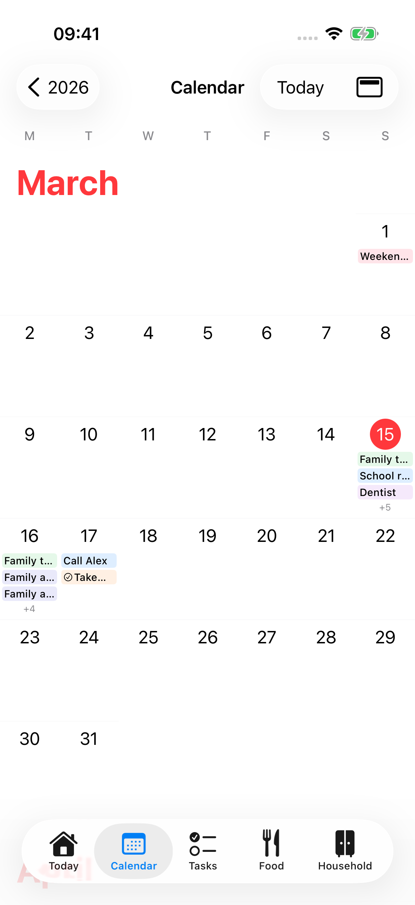
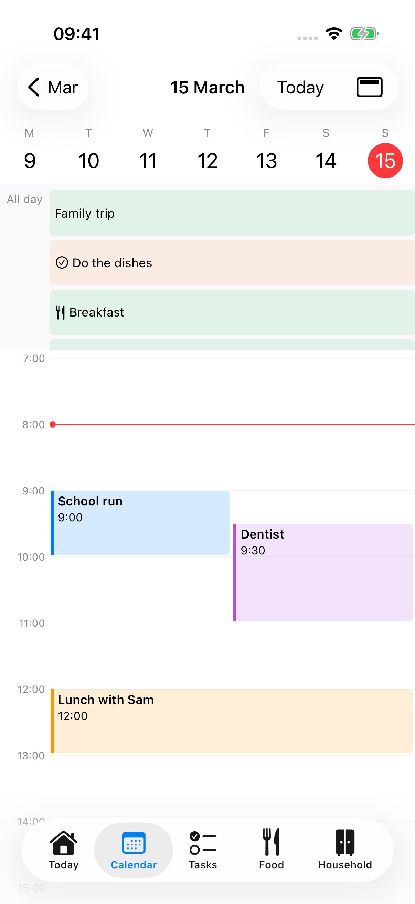
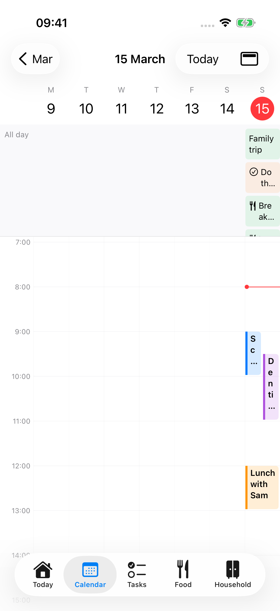
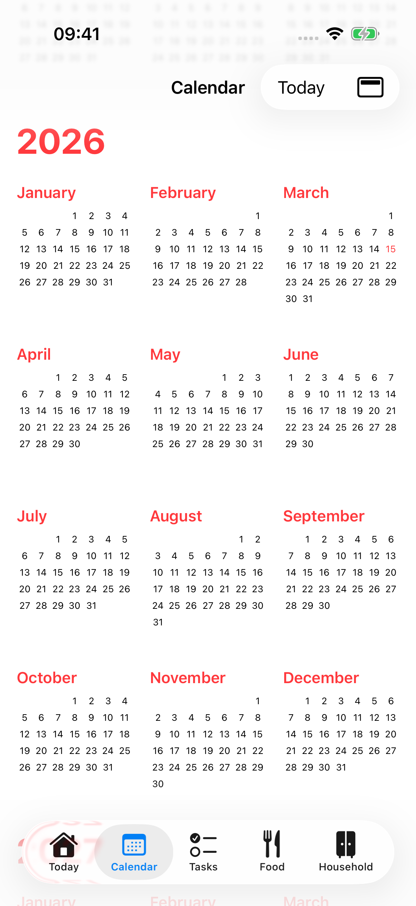
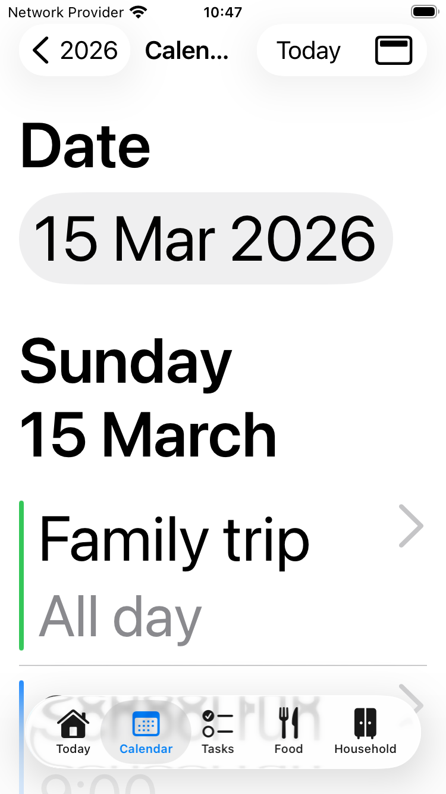
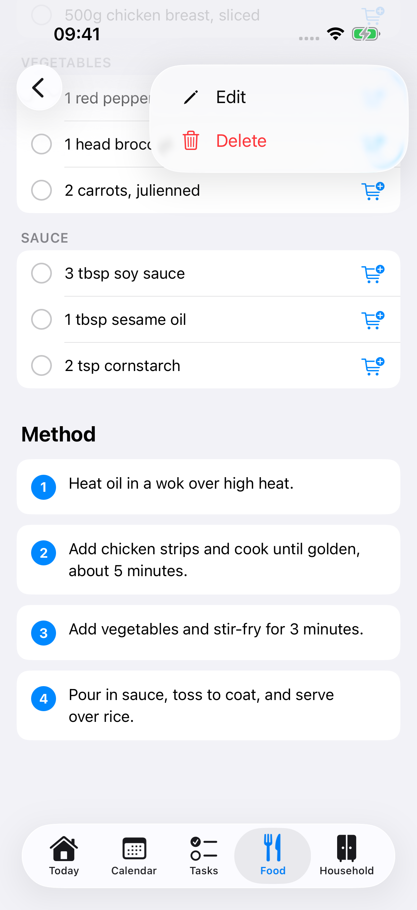

Selected theme: Warm Sage Cosier. Proposed screens now use the warmer cream, sage, and clay palette. Calendar stays marked Keep current. All 68 source mockups follow the requested Apple Design and UI/UX Pro Max skills. Read the design rules and motion specification.
The native foundation works. The task hierarchy needs attention.
Keep native controls, five tabs, and all existing features. Keep the meal plan above chores and show near departures. Expose Recipes and Inventory. Make cooking and shared settings easier to understand.
Each “Current” image is a real simulator capture. Each “Proposal” is a separate static mockup. The images do not prove motion, VoiceOver behavior, or production data.
Welcome / server entry
Connect to the family server or try the app.
User friendlyThe short form is easy to scan. It assumes that a family member knows what a server URL means.
InteractionsConnect remains disabled until the field has text. The URL keyboard suits the field.
Main information and actionConnect is available, but the help for obtaining an address deserves a clearer position.
Apple iOS 26The native form and controls fit iOS. The first screen needs a clearer household purpose.
Proposed change: Explain the family benefit. Ask the user to obtain the address from their family admin. Keep Try Demo secondary.
P1Setup help
Understand how to join a family or set up a server.
User friendlyThe help starts with Docker, OIDC, PKCE, and environment variables. This suits a server admin, but burdens family members.
InteractionsDone provides a clear exit. The repository link provides full instructions.
Main information and actionA family member needs the server address and an account before deployment instructions.
Apple iOS 26The sheet is native. Progressive disclosure better separates common and advanced help.
Proposed change: Lead with three join steps. Keep server deployment in an admin section and retain the full guide.
P2Invalid server address
Correct an invalid connection address.
User friendlyThe form keeps the address and shows an inline error. This supports recovery.
InteractionsThe user can edit and retry. Avoid dismissing the keyboard or replacing the whole form.
Main information and actionThe error needs to identify the required address format next to the field.
Apple iOS 26Inline feedback and native text entry fit the platform.
Proposed change: Keep the error beside a persistent label. Use a specific correction and retain the entered value.
P1Today
Know what needs attention now and complete household work.
User friendlyAgenda, meals, chores, and departures share the page. The current order puts meals before overdue chores and departures last.
InteractionsChore completion, the chore action menu, weather, events, and meals provide direct entry points.
Main information and actionThe meal plan takes priority over chores, as confirmed by the user. Keep meal actions above the chore list.
Apple iOS 26Native navigation and grouped content suit iOS 26. Content priority needs more work than the materials.
Proposed change: Put a near departure first, then the meal plan, the agenda, and overdue and today’s chores. Keep weather compact and omit empty departure cards.
P2Weather detail
Read local conditions and the forecast.
User friendlyThe detail screen keeps weather out of Today. Each hourly row repeats the full date, which slows the scan.
InteractionsThe header weather control opens the detail screen. Back returns to Today.
Main information and actionCurrent conditions, the forecast, and data freshness should appear in that order.
Apple iOS 26Native navigation and semantic type provide a suitable base.
Proposed change: Keep the current conditions prominent. Use shorter hourly time labels. Retain all 24 hourly forecasts, weather advice, freshness, and Open-Meteo attribution.
P1Event detail
Inspect an event and know when to leave.
User friendlyThe title, date, location, description, and departure are present. Departure follows the description, which can push it down.
InteractionsThe event opens from Today or Calendar. The same detail should serve both routes.
Main information and actionGroup the start time, location, and departure before a long description.
Apple iOS 26The native detail view fits iOS. Better grouping improves the reading order.
Proposed change: Put date and location together. Put the departure immediately below them. Keep the full description below.
P2Today chore menu
Skip a particular task without changing its repeat rule.
User friendlyA menu keeps secondary actions away from the completion control. The affected chore needs clear context.
InteractionsThe ellipsis opens the menu. An outside tap dismisses the native popover when no Cancel control appears.
Main information and actionComplete remains the direct action. Skip needs a short explanation of its effect.
Apple iOS 26The native menu is appropriate. Do not replace it with a custom floating panel.
Proposed change: Include the chore name and assignee. Explain Skip. Add a route to the chore setup.
KeepCalendar: month and zoom
Browse dates and inspect the selected day.
Current · iphone-light
Revised proposal · Static mockupKeep the native system screen.
User friendlyThe grid provides useful month context. Narrow date columns truncate event titles even when the rows are tall.
InteractionsMonth scroll, pinch zoom, date selection, and Today work in the captured interaction tests.
Main information and actionA readable selected-day list helps users inspect events without guessing a truncated title.
Apple iOS 26The system toolbar and floating tab bar fit iOS 26. The content should remain the focus.
Proposed change: Keep the current Calendar design and interactions, as selected by the user. Only remove arrival-margin text. Earlier layout proposals are superseded.
KeepCalendar: day and event overlap
Inspect the daily schedule and open an event.
Current · iphone-light
Revised proposal · Static mockupKeep the native system screen.
User friendlyThe timeline communicates time and separates overlapping events. Text competes for width in simultaneous blocks.
InteractionsTapping an event opens details. Swipe changes the day. Today restores the current date.
Main information and actionThe date, all-day items, and full event names need to remain readable.
Apple iOS 26The native toolbar and direct timeline navigation follow the platform. Avoid adding glass behind event content.
Proposed change: Keep the current Calendar design and interactions, as selected by the user. Only remove arrival-margin text. Earlier layout proposals are superseded.
KeepCalendar: week
Compare the schedule across seven days.
Current · iphone-light
Revised proposal · Static mockupKeep the native system screen.
User friendlyThe week capture shows event titles broken into one-letter lines in seven narrow columns. This prevents useful inspection.
InteractionsThe view menu selects Week. Select a day or event to inspect details.
Main information and actionThe overview needs a readable path to the full event name.
Apple iOS 26A week overview is appropriate, but the phone width requires an inspection layer.
Proposed change: Keep the current Calendar design and interactions, as selected by the user. Only remove arrival-margin text. Earlier layout proposals are superseded.
KeepCalendar: year
Move to a month in another part of the year.
Current · iphone-light
Revised proposal · Static mockupKeep the native system screen.
User friendlyThe compact month grids suit broad date navigation. Keep selection obvious.
InteractionsYear opens a month. Today restores the current period.
Main information and actionThe year and month entry points are the main information and actions.
Apple iOS 26The year-to-month hierarchy matches familiar calendar navigation.
Proposed change: Keep the current Calendar design and interactions, as selected by the user. Only remove arrival-margin text. Earlier layout proposals are superseded.
KeepCalendar: accessibility text
Inspect the schedule with large text.
Current · iphone-small
Revised proposal · Static mockupKeep the native system screen.
User friendlyThe accessibility route uses an agenda and date picker instead of forcing large text into a month grid.
InteractionsThe date picker and view menu keep date navigation available.
Main information and actionFull event labels and the selected date matter more than a dense overview.
Apple iOS 26This is a good adaptive pattern. Preserve it when changing the standard calendar layout.
Proposed change: Keep the current Calendar design and interactions, as selected by the user. Only remove arrival-margin text. Earlier layout proposals are superseded.
P1Chore setup list
Create and manage chore rules.
User friendlyThe screen title says Chores while the tab says Tasks. At maximum text size, Show inactive chores consumes much of the first viewport.
InteractionsRows open setup details. The plus control creates a chore. Inactive chores can be shown.
Main information and actionCreation and repeat rules are available. Users also need a direct route to chores due today.
Apple iOS 26The list and toolbar are native. Consistent destination names improve wayfinding.
Proposed change: Rename the tab Chores. Move Show inactive below the active rules. Keep completion on Today and add a direct Today link.
P1Chore setup detail and history
Inspect the repeat rule, current task, and history.
User friendlyThe setup, current task, and history are clear groups. “Complete or skip this task on Home” names a destination that is actually Today.
InteractionsEdit and delete are below the history. The completion instruction has no direct link.
Main information and actionThe current task deserves a higher position and a direct route to its action.
Apple iOS 26Native list sections suit the detail. Place the frequent edit action in the toolbar.
Proposed change: Put the current task first. Replace Home with Today and make the instruction a link. Keep history and deletion.
P1New chore
Create a chore and assign its schedule.
User friendlyThe form includes the required capabilities, but it mixes details, rotating assignees, dates, and advanced repeat options in one long form.
InteractionsSave stays in the toolbar. Selecting no assignees means everyone; the existing footer explains this.
Main information and actionThe name, first due date, and eligible people should lead. Advanced repeat settings can follow.
Apple iOS 26The native form and sheet are suitable. Plain labels and progressive disclosure improve the interaction.
Proposed change: Use “Due date” and “Due time” labels. Show a repeat summary and keep advanced conditions in a repeat section.
P1Edit chore and repeat rule
Change a chore rule without changing the outstanding task.
User friendlyThe existing explanation preserves an important distinction: rule changes affect the next task.
InteractionsThe form retains current task ownership and dates. The weekday controls are compact for touch.
Main information and actionMake the current task constraint and resulting repeat rule easy to read.
Apple iOS 26The native form is appropriate. Aim for 44-point default touch targets on custom weekday controls.
Proposed change: Keep the current-task explanation. Use full-size weekday controls and a readable repeat summary.
P2Deletion confirmations
Confirm a destructive change with enough context.
User friendlyThe app uses native confirmation dialogs. Naming the item and the effect reduces mistakes.
InteractionsDelete confirms the action. Cancel or an outside tap dismisses the dialog, depending on presentation.
Main information and actionThe user needs to know exactly what disappears and whether history remains.
Apple iOS 26Native confirmation dialogs fit iOS 26. Preserve their system appearance and roles.
Proposed change: Name the item in the title. Explain the effect, including area contents or retained chore history.
P1Food / daily meal plan
Read the selected day’s meals and reach recipes.
User friendlyThe date strip and meal rows are clear. Large empty slots push Recipes down. At maximum text size, the header delays access to the first meal.
InteractionsThe planned meal row opens Edit. A separate View recipe action opens the recipe.
Main information and actionUsers often want to read or cook a planned recipe. Opening it should be the main planned-meal action.
Apple iOS 26Native lists and date selection fit iOS. Keep navigation predictable across empty and planned meals.
Proposed change: Use the chosen Food overview with Meal plan and Recipes navigation rows, followed by today’s meals. Open each destination with a normal Back action.
P2Full week meal plan
Plan meals across the Friday–Thursday week.
User friendlyThe week keeps all three meal types for every day. Repeated empty-row helper text makes it long.
InteractionsThe selected week carries through from Food. Week navigation remains available.
Main information and actionKeep the week range and day headings clear while reducing empty-slot height.
Apple iOS 26The native list is suitable. Compact content improves scanning without removing meal slots.
Proposed change: Keep Friday–Thursday boundaries. Use shorter empty rows and retain all breakfast, lunch, and dinner actions.
P2Add meal / recipe selection
Choose a recipe or enter a custom meal.
User friendlyOne name field supports two paths. The footer explains Return, but the distinction between text and a linked recipe needs emphasis.
InteractionsTyping filters recipes. Choosing a recipe retains its link. Return saves a custom name.
Main information and actionSave and the selected recipe need an obvious state.
Apple iOS 26Native sheet controls suit the task. Persistent labels help when the keyboard is open.
Proposed change: Keep Save visible. State “Choose a recipe or save the meal name.” Show a checkmark for the selected recipe.
P1Edit meal
Change a planned meal without an unexpected recipe-link change.
User friendlyThe existing editor supports both custom meals and linked recipes.
InteractionsChanging a linked meal name removes the recipe link. That effect needs clear feedback.
Main information and actionShow the linked recipe, Save, and Remove meal distinctly.
Apple iOS 26Keep the native editor and recipe search. Make selection explicit instead of adding a warning.
Proposed change: Remove the link warning. Typing filters recipes without changing the current link. Selecting a result changes the recipe. Use name only explicitly selects a custom meal. Save applies the choice.
P2Recipe list
Find a family recipe.
User friendlyThe list is short and clear. The two durations have no visible prep/cook labels. Search can be out of view until the list reveals it.
InteractionsSearch filters by text. Meal type narrows the list. Plus opens the recipe form.
Main information and actionSearch and the recipe title should lead. Keep creation available without dominating the list.
Apple iOS 26Native searchable lists fit iOS 26. Use the system search presentation in the implementation.
Proposed change: Keep search accessible from entry. Label prep and cook times. Expose Recipes at the top of Food.
P2Recipe search: no results
Recover from an unsuccessful search.
User friendlyThe empty-result view explains that the query has no matches.
InteractionsThe user can edit the query and change the meal filter.
Main information and actionA direct Clear search action reduces the recovery effort.
Apple iOS 26The native empty view is suitable. Keep query context and a specific recovery action.
Proposed change: Add Clear search and explain that the meal filter can also hide matches.
P1Recipe detail, ingredient actions, and method
Read a recipe, prepare ingredients, or start cooking.
User friendlyIngredients and method are readable. Cooking uses a flame-only toolbar button; ingredient check and cart actions are close together.
InteractionsEach ingredient has separate check and shopping actions. The actions must remain independent.
Main information and actionStart cooking deserves a labelled button near the title and timings.
Apple iOS 26Native content and toolbar controls suit iOS 26. Keep important actions clear without adding glass to ingredient rows.
Proposed change: Add Start cooking near the title. Keep each ingredient’s quantity, check state, and independent add-to-shopping action.
KeepRecipe action menu
Edit or delete a recipe.
Current · iphone-light
Revised proposal · Static mockup User friendlyThe ellipsis keeps occasional actions out of the reading flow.
InteractionsThe menu opens Edit and Delete. Deletion needs a confirmation.
Main information and actionKeep Start cooking outside the secondary action menu.
Apple iOS 26The native menu is appropriate. Retain clear labels and destructive roles.
Proposed change: Keep the menu. Add a prominent Start cooking button on the detail screen.
P1New recipe
Create a recipe with ingredients and steps.
User friendlyThe large empty photo area precedes the required title. It consumes the most valuable space before the user enters any content.
InteractionsThe form supports ingredient groups, separate steps, a photo, timings, servings, meal type, and a source.
Main information and actionThe title and recipe content matter more than an optional photo.
Apple iOS 26The native form is a good base. Required content should lead the hierarchy.
Proposed change: Put Title first. Reduce Photo to an optional row. Keep every content section and its add/remove actions.
P1Edit recipe
Edit the complete recipe without losing content.
Current · iphone-lightRevised proposal · Static mockup User friendlyThe form contains all needed fields. Photo precedes the title. At maximum text size, the ingredient editor shows only part of a line.
InteractionsSave applies all sections together. Cancel exits. Existing ingredient groups and steps remain editable.
Main information and actionTitle, ingredients, and method need the clearest entry points.
Apple iOS 26Keep the native form. A consistent field order across create and edit improves predictability.
Proposed change: Use the same title-first structure as New recipe. Let ingredient fields expand at large text sizes. Keep the photo, source, groups, and step controls.
P1Cook mode: ingredients
Prepare the ingredients before the first cooking step.
Current · iphone-repairsRevised proposal · Static mockup User friendlyThe checklist is useful. The footer calls this page “1 of 5” while the next page says “Step 1 of 4.”
InteractionsChecks provide preparation feedback. The next control is an unlabelled visual chevron.
Main information and actionUse Start step 1 and make Ingredients a separate stage from numbered cooking steps.
Apple iOS 26The full-screen focus and awake display suit cooking. Visible labels improve understanding.
Proposed change: Show Before you start, then Start step 1. Count only cooking steps in the step progress.
P1Cook mode: method step
Follow one method step with little effort.
Current · iphone-repairsRevised proposal · Static mockup User friendlyLarge step text is useful. The visible “Step 1 of 4” and footer “2 of 5” use different counts.
InteractionsSwipe and chevrons move between pages. Previous and Next labels help users with unfamiliar gestures.
Main information and actionKeep the current step and a clear next action prominent.
Apple iOS 26The focused native screen is appropriate. Keep Reduce Motion support and interruptible system transitions.
Proposed change: Use one step count. Add Previous and Next step labels. Keep swipe navigation as an additional path.
P1Cook mode: final step
Finish the recipe and return to its details.
Current · iphone-repairsRevised proposal · Static mockup User friendlyThe final Done control is available. In the maximum-text capture, its label wraps inside the footer button and crowds the progress display.
InteractionsDone closes cook mode and restores the recipe.
Main information and actionKeep the last instruction visible above Finish cooking.
Apple iOS 26A native button and predictable return path fit the platform.
Proposed change: Use a full-width Finish cooking button and retain Previous step. Keep both labels readable at maximum text size.
P1Shopping list and low-stock suggestions
Add and purchase shopping items.
Current · iphone-repairsRevised proposal · Static mockup User friendlyThe list supports a fast shopping task. Inventory is below the shopping content, so a long list can hide it.
InteractionsThe check control purchases an item. The item menu supports rename and delete.
Main information and actionAdding an item and marking a purchase should remain the fastest actions.
Apple iOS 26The native list and floating tab bar fit iOS 26. Separate shopping from stock actions clearly.
Proposed change: Use the chosen Household overview with Shopping list and Inventory navigation rows, followed by low-stock items. Keep inline rename and five-second purchase Undo in Shopping list.
P2Restock after purchase
Update inventory after purchasing a linked item.
Current · iphone-repairsRevised proposal · Static mockup User friendlyThe form already shows current stock and offers Not now. The transition from purchase to stock entry needs a short explanation.
InteractionsThe user enters a quantity or percentage and confirms Restock.
Main information and actionShow the current level, the new level, and an explicit defer action.
Apple iOS 26The native sheet is appropriate. Keep the two decisions clear and recoverable.
Proposed change: Keep stock updates optional through Inventory. Do not interrupt a shopping check with this form. Retain the current stock, a cancel action, and the new-level label.
P1Inventory overview
Find an area and see stock that needs attention.
Current · iphone-finalRevised proposal · Static mockup User friendlyThe six-item Running Low list comes before Areas. It pushes the main navigation toward or below the bottom edge.
InteractionsArea rows open their contents. Low-stock rows can add one item to Shopping.
Main information and actionArea navigation needs a stable, visible position.
Apple iOS 26Native lists work well. Content order should support navigation before a long status list.
Proposed change: Place Areas first and Running low below. Keep every low-stock item and its shopping action.
P1Inventory area
Read stock levels and adjust household items.
Current · iphone-finalRevised proposal · Static mockup User friendlyCounts, level bars, low-stock status, and cart controls share each row. Some row-wide edit actions lack a clear visual cue.
InteractionsTap the item name to edit. Plus/minus adjusts count. Cart adds the item to Shopping.
Main information and actionKeep quick stock adjustments separate from row navigation and shopping.
Apple iOS 26Native list rows are suitable. Clear control boundaries and target sizes matter more than decoration.
Proposed change: Use a clear edit affordance, explicit stock values, and distinct shopping controls. Retain All and Running low filters.
P2Inventory area menu
Edit or delete an inventory area.
Current · iphone-lightRevised proposal · Static mockup User friendlyThe long-press menu is useful as a shortcut but is hard to discover as the only visible edit route.
InteractionsLong press or swipe reveals Edit and Delete. Deletion also removes the area’s items.
Main information and actionA visible area action menu helps users find edit and delete.
Apple iOS 26Native context menus suit shortcuts. Important management actions need a discoverable alternative.
Proposed change: Add a visible area action menu. Keep long press and swipe as shortcuts.
KeepNew inventory area
Name a storage area and select its icon and colour.
Current · iphone-lightRevised proposal · Static mockup User friendlyThe compact form and preview explain the result well.
InteractionsName receives keyboard focus. Save stays disabled until the name has text.
Main information and actionName, Save, and the preview are available.
Apple iOS 26This is a suitable native form. Avoid a broad redesign.
Proposed change: Keep the form. Add one short description of what an area represents.
KeepEdit inventory area
Change an area name, icon, or colour.
Current · iphone-lightRevised proposal · Static mockup User friendlyThe form matches area creation and includes a preview.
InteractionsSave applies the area changes. Cancel returns to Inventory.
Main information and actionKeep the current values and preview visible.
Apple iOS 26The consistent native form follows platform conventions.
Proposed change: Retain this form and use the same field order as New area.
P2New inventory item: count
Add an item with a count and low-stock threshold.
Current · iphone-finalRevised proposal · Static mockup User friendlyThe form is short. Count and Level are domain terms that benefit from a household example.
InteractionsThe tracking choice changes the stock controls. Save needs a name.
Main information and actionName, quantity, unit, and the meaning of the threshold need clear labels.
Apple iOS 26Native form controls suit this task. A numeric field can complement a stepper for large counts.
Proposed change: Explain Count and Level. Label the threshold explicitly and retain precise numeric input.
P2Edit inventory item: level
Update a partly used item and its low-stock threshold.
Current · iphone-finalRevised proposal · Static mockup User friendlyThe percentage and slider express current stock. The form says “Low below,” but the iOS model includes the threshold value in its low-stock state.
InteractionsThe slider updates the remaining level. Save applies the form; Delete asks for confirmation.
Main information and actionKeep the current percentage and threshold together.
Apple iOS 26Native slider and form controls fit iOS. Add a precise numeric entry route if the slider alone is too coarse.
Proposed change: Use Remaining level and Alert at or below. Keep the percentage, slider, Save, and delete confirmation.
P1Settings and profile
Manage this iPhone, the profile, and family settings.
Current · iphone-lightRevised proposal · Static mockup User friendlyThe list groups App and Admin. The avatar label says Open profile, but the destination says Settings. At maximum text size, identity and photo controls delay the settings list.
InteractionsDone closes the sheet. Links open settings details. Admin-only entries depend on the current role.
Main information and actionUsers need a clear distinction between this iPhone and changes that affect the whole family.
Apple iOS 26Native inset-grouped settings and sheets suit iOS 26. Name the entry and destination consistently.
Proposed change: Use Settings for the entry label. Separate This iPhone and Family administration. Retain every existing settings destination.
KeepSystem photo picker
Choose a profile photo.
Current · iphone-lightRevised proposal · Static mockupKeep the native system screen.
User friendlyThe app uses the system picker. The capture shows its loading state; the settled photo gallery is not reviewed.
InteractionsSelection returns an image to the app. Cancel leaves the profile unchanged.
Main information and actionKeep photo selection inside the system picker and show upload feedback in Settings.
Apple iOS 26Retain the native Photos picker. Do not reproduce its interface with a custom design.
Proposed change: No picker redesign. Preserve upload feedback and retry errors in the profile.
P1Server configuration
Change the server connection for this iPhone.
Current · iphone-repairsRevised proposal · Static mockup User friendlyThe form is compact. Connect can sign the user out. The captured accessibility hierarchy exposes an unnamed Server URL button when the demo URL is empty.
InteractionsConnect validates and discovers server settings before saving. Cancel exits.
Main information and actionExplain the sign-out effect before submission and preserve the current configuration on failure.
Apple iOS 26The native form fits iOS. Important consequences need plain text near the action.
Proposed change: State that connecting to another server signs the user out. Keep the address and error inline.
P1Chore reminders and device permission
Enable this iPhone’s notifications and set the family reminder schedule.
Current · iphone-lightRevised proposal · Static mockup User friendlyThe screen combines a local permission with a family-wide schedule. Disabled demo controls need a visible reason.
InteractionsThe device control opens or changes local permission. Admins edit both shared times and save.
Main information and actionSeparate the local permission state from the family schedule and show the time zone.
Apple iOS 26Native toggles and time pickers are suitable. Use labels and explanatory text for disabled states.
Proposed change: Group This iPhone and Family reminder schedule. Explain demo limitations and unavailable server push support.
P2Family broadcast: compose
Send a short message to family iPhones.
Current · iphone-lightRevised proposal · Static mockup User friendlyThe form has a message field, character count, and Send. The text already explains lock-screen exposure.
InteractionsSend stays disabled for invalid text or unavailable push support. The keyboard has Done.
Main information and actionUse a household label such as Family message. Explain that only registered iPhones receive it.
Apple iOS 26The native form works. Keep the action label and delivery scope understandable.
Proposed change: Rename the screen Family message. Keep the 500-character limit and lock-screen explanation. Preserve the message after a failed send.
P1Family broadcast: result
Understand whether the family message reaches any registered devices.
Current · iphone-lightRevised proposal · Static mockup User friendly“Apple accepted: 0” is transport language. At maximum text size, the result sits below the message field and can remain outside the viewport.
InteractionsThe result remains in the form. Retry must not repeat accepted notifications.
Main information and actionLead with the outcome and next step. Apple acceptance does not prove device display or reading.
Apple iOS 26Clear human feedback is more important than transport detail in a household app.
Proposed change: Lead with No available iPhones for the zero-device case. Move focus to the result. Retain the message and link to notification setup.
P2Home information and location
Set the home location and arrival margin.
Current · iphone-finalRevised proposal · Static mockup User friendlyCoordinates and the time zone are present. “Home Info” does not explain weather and departures.
InteractionsThe user captures device location, confirms it, then saves. This avoids silently changing the home location.
Main information and actionExplain the purpose and preserve the explicit location confirmation.
Apple iOS 26Native location permission and form controls are suitable. Technical coordinates need plain context.
Proposed change: Use Home location. Explain weather, departures, and arrival margin. Keep coordinates available and keep confirm-before-save.
KeepFamily name
Change the name shown to the family.
Current · iphone-finalRevised proposal · Static mockup User friendlyThe one-field form and family-wide explanation are sufficient.
InteractionsSave applies the name and returns. Empty text disables Save.
Main information and actionThe field needs a label that remains visible after entry.
Apple iOS 26Keep the native form. No structural redesign is needed.
Proposed change: Add a persistent Family name label. Retain the explanation and Save behavior.
P1Family members and role actions
See family membership and manage roles.
Current · iphone-finalRevised proposal · Static mockup User friendlyNames, emails, and the Admin badge are clear. Promote and Demote only appear after a swipe.
InteractionsA swipe changes another member’s role. The current user has no self-demote action.
Main information and actionRole changes need a discoverable path and a plain explanation of the permission effect.
Apple iOS 26Native rows are suitable. Swipe-only role management is hard to discover.
Proposed change: Open role details from the member row. Explain Member and Admin. Confirm a change and retain the self-protection rule.
P2Category list and actions
Create and manage chore categories.
Current · iphone-lightRevised proposal · Static mockup User friendlyThe list is short and easy to scan. Main Course and Salads look like recipe categories in the demo, which confuses the chore purpose.
InteractionsPlus creates a category. Swipe exposes rename and delete.
Main information and actionExplain what categories organise and make editing discoverable.
Apple iOS 26Native lists, sheets, and confirmations are suitable.
Proposed change: Keep the native list. Add a chore-focused explanation and a visible row action. Correct the demo category examples.
KeepNew category
Create a named chore category.
Current · iphone-lightRevised proposal · Static mockup User friendlyThe short name sheet matches the task.
InteractionsSave applies a valid name. Cancel returns without changes.
Main information and actionA category name and visible Save are sufficient.
Apple iOS 26Retain the native form and standard sheet controls.
Proposed change: Keep the form. Use a persistent Category name label.
KeepRename category
Rename an existing category.
Current · iphone-lightRevised proposal · Static mockup User friendlyThe short sheet suits the task. A family-wide effect explanation can prevent surprises.
InteractionsSave applies the name. Delete remains a separate confirmed action.
Main information and actionKeep the current name visible and editable.
Apple iOS 26Retain the native sheet and text field.
Proposed change: Add a short family-wide effect explanation. Keep deletion separate.
P2API token list and empty state
Manage credentials used by other apps.
Current · iphone-finalRevised proposal · Static mockup User friendlyThe empty state offers a plus-based next step but does not explain why a family admin needs a token.
InteractionsPlus opens a name sheet. Existing tokens can be deleted.
Main information and actionExplain the purpose and the effect of deletion before creation.
Apple iOS 26Native list and empty-state controls are suitable.
Proposed change: Explain that tokens connect other apps and act like passwords. Keep the token list in family administration.
P2Create API token
Create a token with an identifiable name.
Current · iphone-finalRevised proposal · Static mockup User friendlyThe name-only sheet is concise. It does not explain the one-time reveal before creation.
InteractionsSave creates the token and opens its one-time value.
Main information and actionUse Create token and explain the next step.
Apple iOS 26Native sheet controls fit the task. Action-specific wording improves feedback.
Proposed change: Use a clear token name label, Create token, and a one-time reveal notice.
P2Token created and copied
Copy the newly created token before dismissing it.
Current · iphone-finalRevised proposal · Static mockup User friendlyThe existing screen already warns that the token appears once. This is useful.
InteractionsCopy Token copies the value. Done closes the reveal. The capture does not show a distinct copied confirmation.
Main information and actionKeep the copy action and one-time warning above other content.
Apple iOS 26Native selectable text and copy controls are suitable. Confirm completion with text.
Proposed change: Retain the one-time reveal. Change the copy label briefly to Copied and announce the result.
P2Chore recurrence variants
Set monthly or custom repeat rules and stop conditions.
Current · iphone-supplementRevised proposal · Static mockup User friendlyThese variants add a day of month, interval unit, end date, or task limit. The form needs a readable summary as options change.
InteractionsNative pickers and switches reveal the relevant controls. Both stop conditions remain available.
Main information and actionShow the resulting schedule before Save.
Apple iOS 26Native form controls are appropriate. Keep custom weekday targets large and label each option plainly.
Proposed change: Retain all recurrence variants. Add a schedule summary and plain labels.
chore-repeat-monthlychore-repeat-custom P2Edit inventory item: count
Change an item quantity, unit, or threshold.
Current · iphone-finalRevised proposal · Static mockup User friendlyThe stock values are explicit. Large quantities need more than repeated stepper taps.
InteractionsThe stepper changes quantity and threshold. Save applies the values.
Main information and actionKeep the quantity and unit together. Offer direct numeric entry.
Apple iOS 26Native numeric entry and steppers fit the platform.
Proposed change: Keep the stepper and add precise numeric entry. Retain unit and threshold.
KeepInventory area: empty
Start stock records in a new area.
Current · iphone-finalRevised proposal · Static mockup User friendlyThe empty area keeps its filter and an Add Item action.
InteractionsAdd Item opens the same item form used in populated areas.
Main information and actionThe next action is to add the first item.
Apple iOS 26Keep the native empty explanation and navigation.
Proposed change: Use a clear empty-state message and retain Add item. No broader redesign is needed.